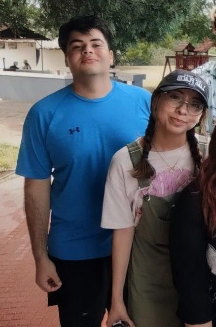
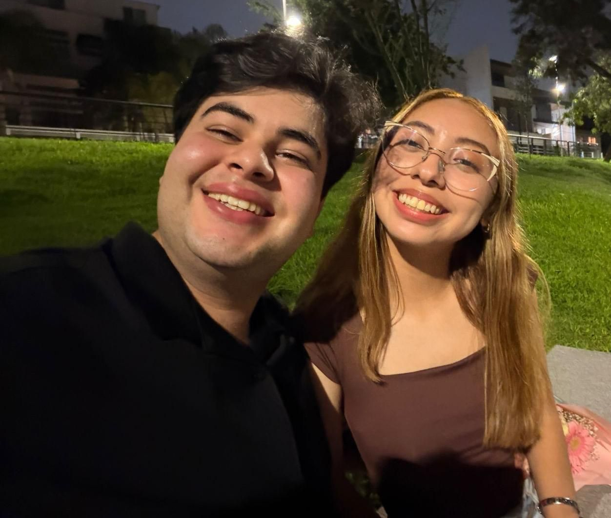
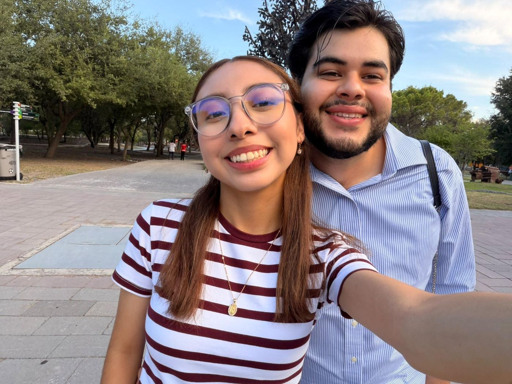

Antes de las cartas y las fotos, quiero que bajes despacio por nuestra historia. Hecho con todo mi cariño para ti.
Nuestra historia es muy, muy bonita y divertida. Hemos vivido muchísimas cosas, y todas y cada una de ellas nos han llevado a esto tan hermoso que tenemos hoy y que mantendremos para siempre. Eres lo mejor que me ha podido pasar en el mundo, amor, y por eso te preparé esto. Mi vida, te voy a contar un poco de lo que hemos vivido.

Nunca voy a olvidar cuando nos conocimos: fuimos a Rancho Tec a un paseo y ahí conocí a una niña muy linda, amiga de una amiga. Desde ese día quedé profundamente enamorado de ti, sin siquiera conocerte bien.

Este día siempre va a estar en mi pensamiento, por lo nervioso que estaba. Pero ese día ya estaba seguro de que eras tú la mujer que quería que fuera la compañera de mi vida. Desde ahí comenzamos una historia muy bonita.

Ya llevamos más de 4 meses juntos, mi amor, y es maravilloso poder vivir tantas cosas contigo. Eres lo más bonito que me ha pasado, y estoy tan feliz y orgulloso de lo que hemos construido. Te amo demasiado, mi vida.
Alejandra, celebrar tu vida es celebrar mi mayor suerte. Desde que estás en mis días, todo tiene más luz y más sentido. Feliz cumpleaños, mi amor, que este nuevo año te regale tanta felicidad como la que tú me das a diario.— Josué ”
Toca cualquier recuadro para subir una foto desde tu teléfono o computadora.
Sigue bajando y toca cada sobre para abrir su carta.